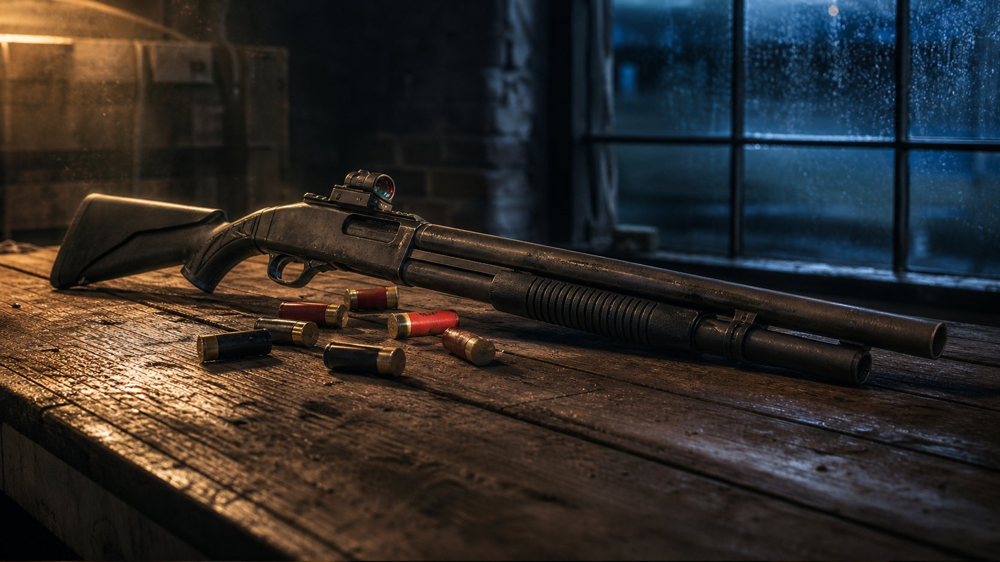

1. Rôle dans le meta S7
Le USAS-12 (B-tier) est l'unique shotgun du catalogue actuel : automatique, dégâts instantanés, faible portée utile. En Saison 7, avec les caps par mode, le shotgun brille en Normal (T4 = cible molle) et en Armory / TV Station. Contre les mutants Infected Zone, le buckshot shred parfaitement.
2. Conseils de jeu
- Munitions d'abord : en S7, la RNG de pénétration T5/T6 a disparu — la bonne mun gagne presque toujours. Tier 3 minimum, Tier 4-5 pour les modes haut de gamme.
- Caps par mode : Normal = T4 max, Lockdown = T5 max, Forbidden = T6. Adaptez votre kit au lobby, pas à votre ego.
- Jouez en door-kicker : le shotgun ne connaît pas le « peek », il connaît le « go ».
- En Duos, un shotgun en ouverture + un SMG en suivi = combo mortel.
- Contre les zombies : buckshot = nettoyage de horde, gardez 2 slugs pour les armored.
À retenir
Au-delà de 12 mètres, le buckshot est un pétard mouillé. Rangez-le pour TV Station et Armory.
Meta complet
Croisez ces analyses avec la Tier List S7 complète et nos builds recommandés (A545 900 RPM, AK-12 laser budget, M24 oneshot).
Fusils a pompe : la portee reelle, c'est dix metres
La donnee la plus utile d'un fusil a pompe est sa portee : dix a quatorze metres selon le modèle. Au-dela, la dispersion des gerbes rend le tir non fiable. Ce qui distingue les cinq armes de la famille, ce n'est pas la puissance, c'est le mode de tir. Le M870 et le MP-133 sont manuels, avec 70 et 60 coups par minute : un tir, une recharge, un temps mort long ou une cartouche rechangee. Le S12K et l'USAS12 sont semi-automatiques et montent a 200 et 275 coups par minute. Le SPR310 est le plus rapide des trois a 300 coups par minute, avec la plus faible portee de la famille à dix mètres. La consequence pratique : en pièce fermée, un fusil semi-automatique gagne le duel. En extérieur, même le plus rapide ne tient pas la distance.
| Arme | Calibre | Cadence | Ergonomie | Portée (m) | Recul vert. | Modes de tir |
|---|---|---|---|---|---|---|
| S12K Shotgun | 12×70mm | 200 | 66 | 14 | 30 | Semi-automatique |
| M870 Shotgun | 12×70mm | 70 | 44 | 12 | 14 | Manuel |
| USAS12 Shotgun | 12×70mm | 275 | 53 | 12 | 37 | Semi-automatique / Automatique |
| MP-133 Shotgun | 12×70mm | 60 | 47 | 11 | 7 | Manuel |
| SPR310 Double-Barreled Shotgun | 12×70mm | 300 | 49 | 10 | 25 | Semi-automatique |
3. Les règles qui dictent le fusil à pompe
Le fusil à pompe n'a pas derapport de dégâts par balle qui vaille le coup : il en a sept. À bout portant, dans un couloir, une cartouche de buckshot décide du sort. C'est l'arme la plus terrifiante et la plus fragile du jeu — celle qui gagne d'un coup et perd d'un seul tir raté.
- Plafonds par mode : Normal = T4 maximum, Lockdown = T5 maximum, Forbidden = T6. Le choix du mode décide de votre tier avant même votre budget.
- Plafond de valeur : 900 000 K d'équipement en Lockdown. Au-delà, le raid refuse de démarrer.
- RNG de pénétration supprimée : depuis la S7, la bonne munition traverse presque toujours. comptez sur votre munition, pas sur la chance.
- TTK allongé, headshots récompensés : la précision compte davantage qu'en S6. Le premier tir placé vaut plus qu'une rafale.
4. Les munitions à connaître
| Munition | Armes | Ce qu'elle change |
|---|---|---|
| 12×70mm buckshot (T2) | M870, Saiga-12 | Le gros du damage, mais seulement à moins de 10 m. |
| 12×70mm slug (T3) | M870, KS23 | Une seule balle en plomb : la seule qui traverse une armure. |
| 8×70mm buckshot (T2) | SKS shotgun | Moins dense, mais meilleure penetration relative. |
| 12×70mm VS AP (T4) | KS23 | Le nouveau projectile S7 : la percée contre l'armure change tout. |
5. Quel kit pour quel budget
| Profil | Budget | Configuration | Usage |
|---|---|---|---|
| Entrée | 40 000 – 70 000 K | M870 en buckshot | Indoor pur |
| Contre armure | 90 000 – 180 000 K | KS23 en VS AP | Contre T4-T5 |
| Spécialiste | 150 000 – 300 000 K | Slug + frein + optique | Traque de niveaux |
6. Les erreurs qui coûtent cher
- Tirer à plus de 15 m : le tir devient un jet de plombs qui rate 90 % du temps.
- Charger du buckshot contre une armure T5 ? ça perfore pas. Passez au slug ou au VS AP.
- Recycler l'arme comme un SMG : chaque rechargement manuel est une seconde de mort.
- Oublier le frein de bouche : il ne fait pas de bruit, il resserre le faisceau.
7. FAQ
Le fusil à pompe est-il rentable ?
En CQB strict, oui, et il est quasi gratuit. En dehors, non.
Quel calibre choisir ?
Le 12×70mm, sans hésiter : le 12×70 VS AP de la S7 a changé la classe face aux armures.
Un fusil à pompe en escouade ?
Oui, en rôle de bouche de porte. Ne comptez pas sur lui pour le mid-range.
Buckshot ou slug ?
Buckshot pour la zone de mort, slug pour percer. En CQB pur, le buckshot gagne ; contre un T5, le slug s'impose.